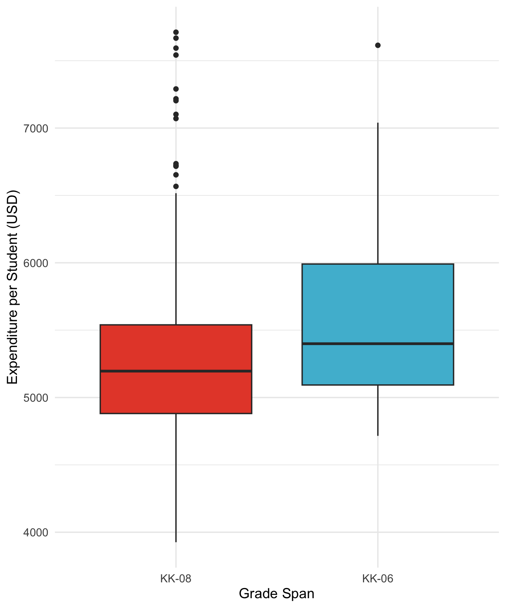
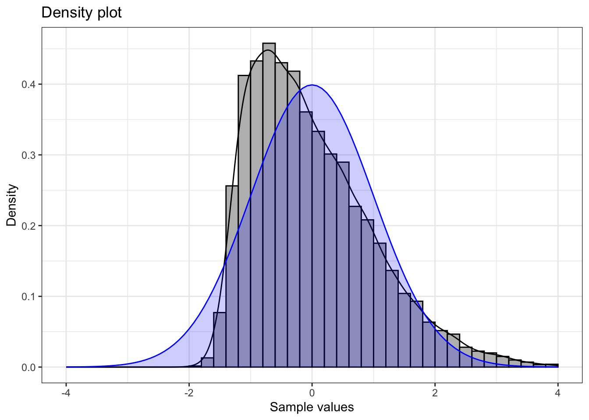
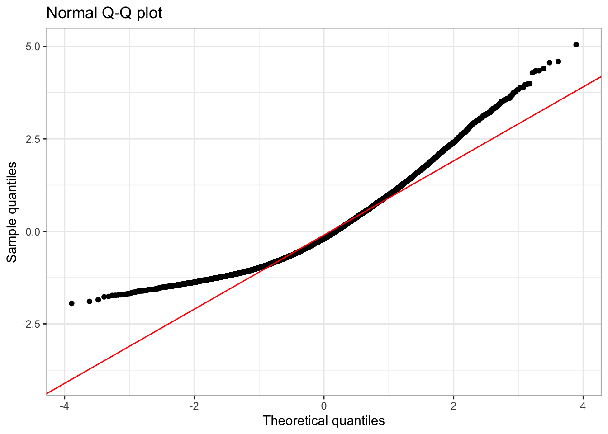
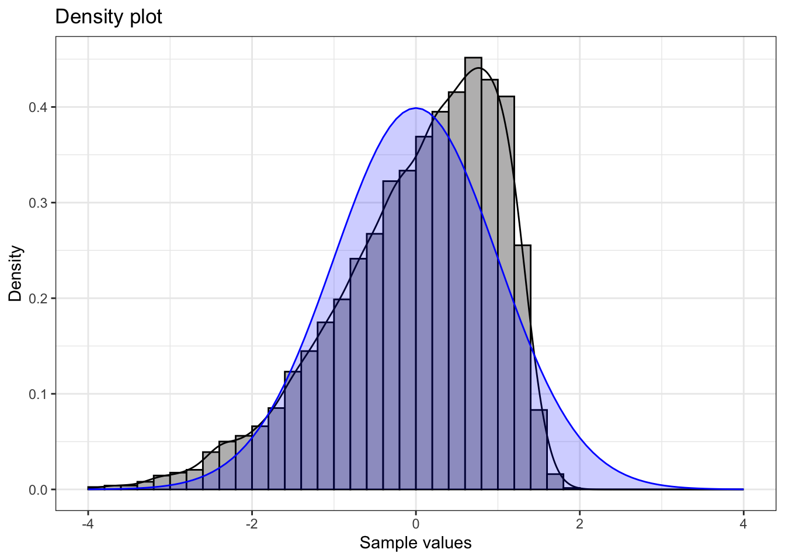
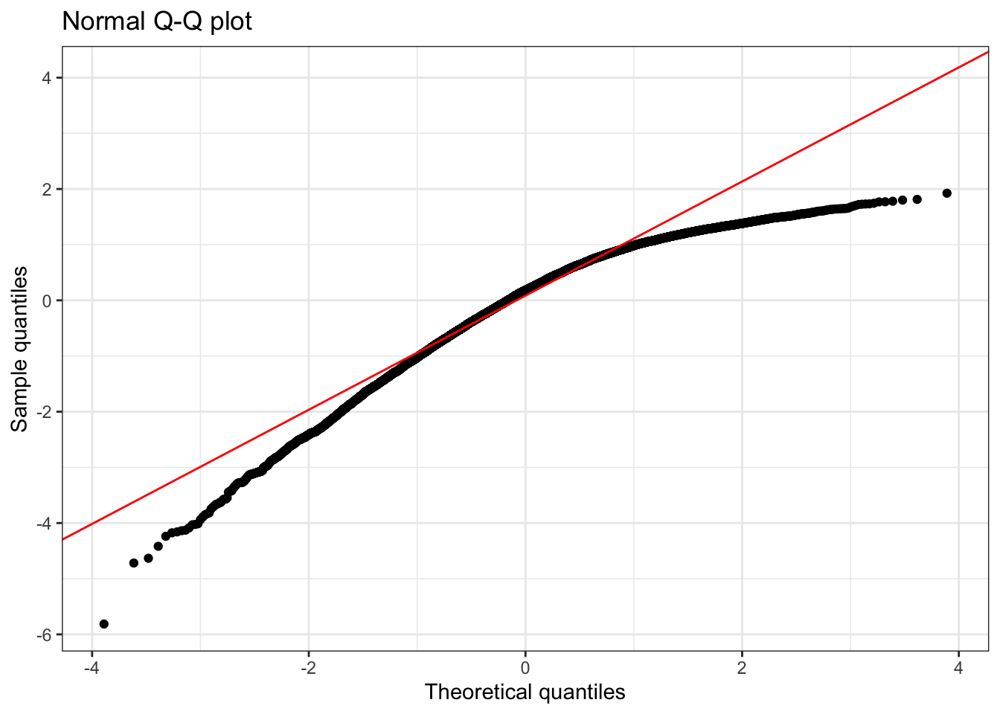
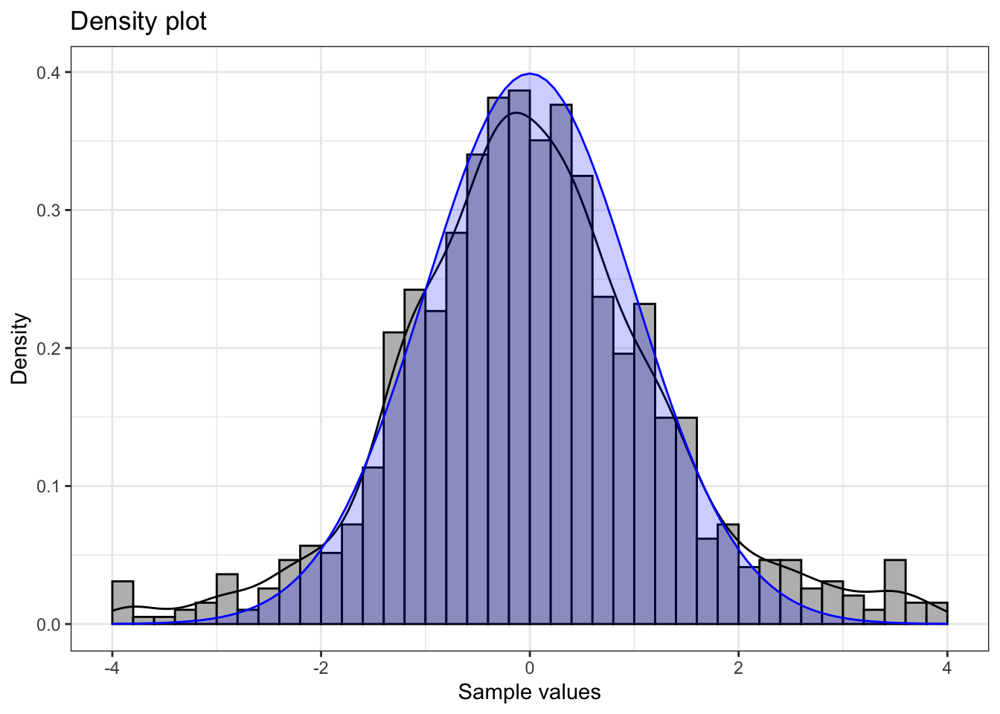
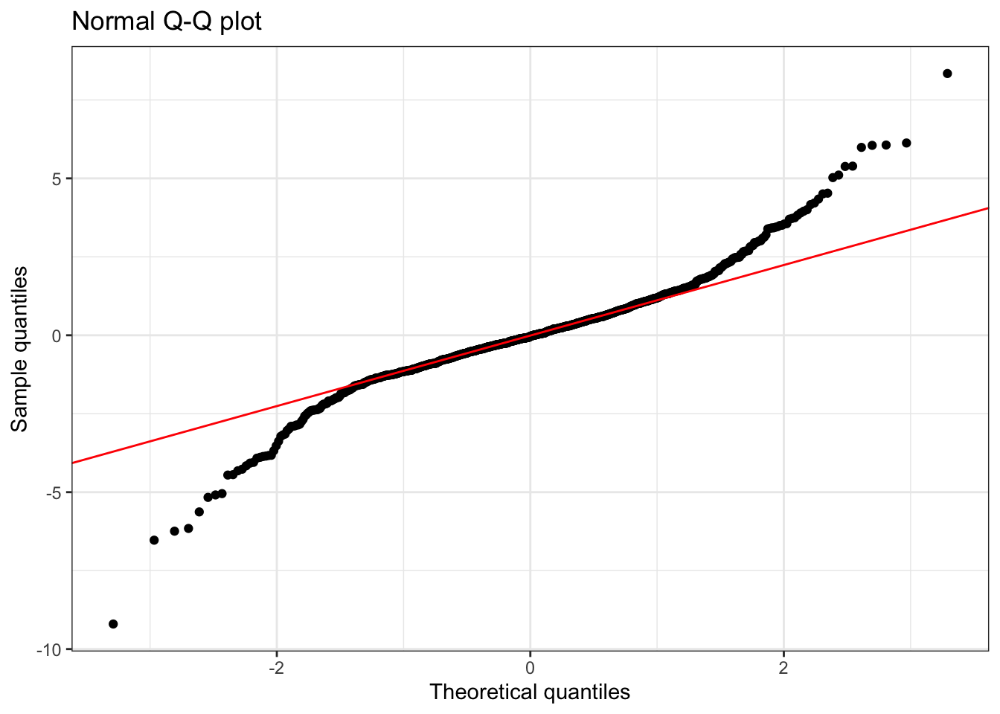
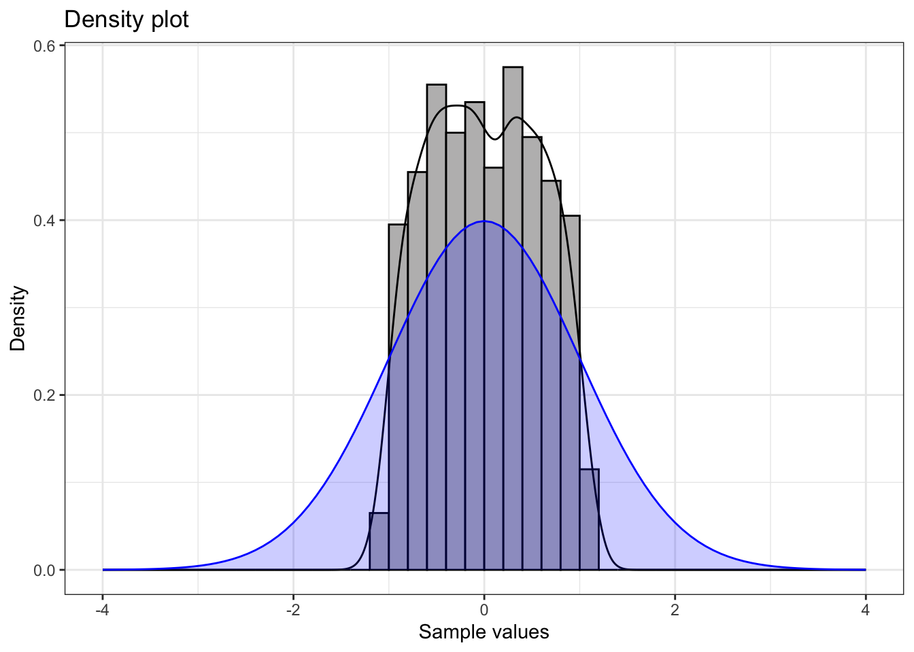

# load packages and dataset
pkgs <- c("tidyverse", "moments", "data.table", "ggsci")
missing <- setdiff(pkgs, rownames(installed.packages()))
if (length(missing) > 0) install.packages(missing)
invisible(lapply(pkgs, function(pkg) suppressPackageStartupMessages(library(pkg, character.only = TRUE))))
f_name <- "https://raw.githubusercontent.com/my1396/FIN5005-Fall2025/refs/heads/main/data/CASchools_test_score.csv"
cas <- read_csv(f_name,
col_types = cols(
county = col_factor(), # read as factor
grades = col_factor()
))Data Visualization
1 Descriptive Analysis and Data Visualization with CASchools
Data visualization is a powerful tool for understanding patterns, relationships, and distributions in datasets. In this session, we will explore the California Schools dataset using various visualization techniques including histograms, box plots, scatter plots, and Q-Q plots. These visualizations help us answer important questions about educational spending, student performance, and the relationships between various school characteristics.
1.1 Dataset Overview
The following prints the first and last 5 rows of the dataset, together with data types of each column:
The following prints the first and last 5 rows of the dataset, together with data types of each column:
cas %>% as.data.table() district school county grades students
<num> <char> <fctr> <fctr> <num>
1: 75119 Sunol Glen Unified Alameda KK-08 195
2: 61499 Manzanita Elementary Butte KK-08 240
3: 61549 Thermalito Union Elementary Butte KK-08 1550
4: 61457 Golden Feather Union Elementary Butte KK-08 243
5: 61523 Palermo Union Elementary Butte KK-08 1335
---
416: 68957 Las Lomitas Elementary San Mateo KK-08 984
417: 69518 Los Altos Elementary Santa Clara KK-08 3724
418: 72611 Somis Union Elementary Ventura KK-08 441
419: 72744 Plumas Elementary Yuba KK-08 101
420: 72751 Wheatland Elementary Yuba KK-08 1778
teachers calworks lunch computer expenditure income english read
<num> <num> <num> <num> <num> <num> <num> <num>
1: 10.90 0.5102 2.0408 67 6384.911 22.690001 0.000000 691.6
2: 11.15 15.4167 47.9167 101 5099.381 9.824000 4.583333 660.5
3: 82.90 55.0323 76.3226 169 5501.955 8.978000 30.000002 636.3
4: 14.00 36.4754 77.0492 85 7101.831 8.978000 0.000000 651.9
5: 71.50 33.1086 78.4270 171 5235.988 9.080333 13.857677 641.8
---
416: 59.73 0.1016 3.5569 195 7290.339 28.716999 5.995935 700.9
417: 208.48 1.0741 1.5038 721 5741.463 41.734108 4.726101 704.0
418: 20.15 3.5635 37.1938 45 4402.832 23.733000 24.263039 648.3
419: 5.00 11.8812 59.4059 14 4776.336 9.952000 2.970297 667.9
420: 93.40 6.9235 47.5712 313 5993.393 12.502000 5.005624 660.5
math
<num>
1: 690.0
2: 661.9
3: 650.9
4: 643.5
5: 639.9
---
416: 707.7
417: 709.5
418: 641.7
419: 676.5
420: 651.0The cas dataset contains information on 420 public school districts in California, specifically those that operate either kindergarten through 6th grade (K–6) or kindergarten through 8th grade (K–8) schools, with data collected for the years 1998 and 1999.
The dataset includes:
- Student performance measures (average reading and math scores).
- School characteristics (such as enrollment, number of teachers, student–teacher ratio, number of computers, expenditure per student).
- Student demographics (including income, percentage qualifying for reduced-price lunch, percentage of English learners, etc.).
cas is a data frame containing 420 observations on 14 variables. Refer to the following table for the full definition.
| Variable | Description |
|---|---|
district |
Character. District code. Unique ID. |
school |
Character. School name. |
county |
Factor indicating county. |
grades |
Factor indicating grade span covered by the district’s schools. It takes on two values: - KK-06: means the district’s schools serve kindergarten through 6th grade.- KK-08: means the district’s schools serve kindergarten through 6th grade. |
students |
Total enrollment. |
teachers |
Number of teachers. |
calworks |
Percent qualifying for CalWorks (income assistance program). |
lunch |
Percent qualifying for reduced-price lunch. |
computer |
Number of computers. |
expenditure |
Expenditure per student. |
income |
District average income (in USD 1,000). |
english |
Percent of English learners (i.e., students for whom English is a second language). |
read |
Average reading score. |
math |
Average math score. |
Data source: Stock, J. H. and Watson, M. W. (2020). Introduction to Econometrics, 4th ed. Pearson.
1.2 Summary Statistics
The following displays the summary for each variable in the dataset:
summary(cas) district school county grades
Min. :61382 Length:420 Sonoma : 29 KK-08:359
1st Qu.:64308 Class :character Kern : 27 KK-06: 61
Median :67760 Mode :character Los Angeles: 27
Mean :67473 Tulare : 24
3rd Qu.:70419 San Diego : 21
Max. :75440 Santa Clara: 20
(Other) :272
students teachers calworks lunch
Min. : 81.0 Min. : 4.85 Min. : 0.000 Min. : 0.00
1st Qu.: 379.0 1st Qu.: 19.66 1st Qu.: 4.395 1st Qu.: 23.28
Median : 950.5 Median : 48.56 Median :10.520 Median : 41.75
Mean : 2628.8 Mean : 129.07 Mean :13.246 Mean : 44.71
3rd Qu.: 3008.0 3rd Qu.: 146.35 3rd Qu.:18.981 3rd Qu.: 66.86
Max. :27176.0 Max. :1429.00 Max. :78.994 Max. :100.00
computer expenditure income english
Min. : 0.0 Min. :3926 Min. : 5.335 Min. : 0.000
1st Qu.: 46.0 1st Qu.:4906 1st Qu.:10.639 1st Qu.: 1.941
Median : 117.5 Median :5215 Median :13.728 Median : 8.778
Mean : 303.4 Mean :5312 Mean :15.317 Mean :15.768
3rd Qu.: 375.2 3rd Qu.:5601 3rd Qu.:17.629 3rd Qu.:22.970
Max. :3324.0 Max. :7712 Max. :55.328 Max. :85.540
read math
Min. :604.5 Min. :605.4
1st Qu.:640.4 1st Qu.:639.4
Median :655.8 Median :652.4
Mean :655.0 Mean :653.3
3rd Qu.:668.7 3rd Qu.:665.8
Max. :704.0 Max. :709.5
Interpreting the Summary Statistics
This summary provides key insights into our dataset:
- Continuous variables (students, teachers, expenditure, income, etc.) show their distribution through quartiles, mean, and range
- Categorical variables (county, grades) show frequency counts
- Notice the range of expenditure per student: from around \$3,900 to over \$7,700 - this substantial variation will be a key focus of our analysis
- Test scores (reading and math) also show considerable variation, suggesting potential relationships with school resources
1.3 Expenditure Variation Analysis
Q: To what extent does expenditure per student vary?
Understanding the distribution of expenditure per student is crucial for education policy analysis. Let’s examine detailed descriptive statistics:
quick_summary <- function(x, full=FALSE) {
# Function to compute basic descriptive statistics
if (!full){
# Basic summary
data.frame(
n = length(x),
min = min(x),
mean = mean(x),
median = median(x),
max = max(x),
sd = sd(x),
skewness = moments::skewness(x),
kurtosis = moments::kurtosis(x),
row.names = NULL
)
} else {
# Full summary with quartiles and IQR
data.frame(
n = length(x),
min = min(x),
Q1 = quantile(x, 0.25),
mean = mean(x),
median = median(x),
Q3 = quantile(x, 0.75),
max = max(x),
IQR = IQR(x),
sd = sd(x),
skewness = moments::skewness(x),
kurtosis = moments::kurtosis(x),
row.names = NULL
)
}
}
quick_summary(cas$expenditure) %>% round(2) n min mean median max sd skewness kurtosis
1 420 3926.07 5312.41 5214.52 7711.51 633.94 1.07 4.88Interpreting the Results:
- Range: Expenditure varies from about \$3,926 to \$7,712 per student - a difference of nearly \$4,000
- Central Tendency: The mean (\$5,312) is slightly higher than the median (\$5,196), suggesting a slight right skew
- Variability: Standard deviation of \$633 indicates moderate spread around the mean
- Skewness (1.07): Positive skewness confirms some districts spend considerably more than average
- Kurtosis (4.88): Larger than 3 indicates a distribution with fat tails relative to the normal distribution.
# Basic histogram
ggplot(cas, aes(x = expenditure)) +
geom_histogram(binwidth = 500, boundary = 0, fill = "lightblue", color = "black") +
labs(title = "Histogram of Expenditure per Student",
x = "Expenditure per Student (USD)",
y = "Frequency") +
theme_minimal(base_size = 14)What the Histogram Reveals:
- Most districts cluster around the \$5,000-\$5,500 range
- Variability is moderate
- The distribution has a long right tail, indicating positive skewness. That suggests that expenditure per student is concentrated at lower values for most districts, while a smaller number of districts spend substantially more, pulling the mean above the median
- There are few extreme positive outliers, indicating some districts do spend significantly more than average
1.4 Group Comparison: K-6 vs K-8 Schools
Q: Are there any differences in expenditure per student between K-6 and K-8 schools?
This comparison helps us understand whether grade span affects resource allocation. Let’s examine the statistics for each group:
cas %>%
group_by(grades) %>%
group_map(~ {
s <- quick_summary(.x$expenditure, full=TRUE)
s <- cbind(
grades = .y$grades, # add group info
s)
return(s)
}) %>%
bind_rows() grades n min Q1 mean median Q3 max IQR
1 KK-08 359 3926.070 4881.139 5267.365 5195.919 5539.380 7711.507 658.2412
2 KK-06 61 4715.446 5092.917 5577.493 5399.383 5990.794 7614.379 897.8770
sd skewness kurtosis
1 618.6415 1.094514 5.284716
2 662.8033 1.019435 3.309185Key Findings:
- K–6 schools (61 districts): Mean expenditure of \$5,577, slightly higher than K–8 schools
- K–8 schools (359 districts): Mean expenditure of \$5,267, with a larger sample size
- K–6 schools indicating higher variability, with a standard deviation of \$662 compared to \$618 for K-8 schools
- Skewness is positive for both groups, with K–8 schools showing slightly more skewness
- The difference suggests that smaller grade span districts may have slightly higher per-pupil spending
Box plot by grades span
ggplot(cas, aes(x = grades, y = expenditure, fill = grades)) +
geom_boxplot() +
scale_fill_npg() +
labs(x = "Grade Span",
y = "Expenditure per Student (USD)") +
theme_minimal(base_size = 14) +
theme(legend.position = "none")
Understanding the Box Plot:
1. Box and middle bar (median)
The box itself spans from the first quartile (Q1, 25th percentile) to the third quartile (Q3, 75th percentile).
This range is called the interquartile range (IQR = Q3 - Q1).
The middle bar inside the box represents the median (50th percentile).
If the median is closer to the bottom of the box, the lower half of the data is more concentrated.
If closer to the top, the upper half is more concentrated.
2. Whiskers
The whiskers extend from the box to show the range of the data excluding outliers.
A whisker extends to the largest/smallest value within 1.5 × IQR from the box:
Upper whisker = largest value ≤ Q3 + 1.5 × IQR
Lower whisker = smallest value ≥ Q1 - 1.5 × IQR
3. Outliers
Points beyond the whiskers are plotted individually as outliers.
These are values that are unusually high or low relative to the bulk of the data.
Summary of boxplot
- Box: middle 50% of the data
- Middle line: median
- Whiskers: typical range, excluding extreme values
- Outliers: extreme observations
Interpreting the Box Plot:
- Median lines: K–6 districts show a higher median expenditure than K-8 districts
- Box sizes: K–6 district show a larger interquartile ranges (IQR), indicating greater middle 50% spread
- Outliers: K–8 groups show more positive outliers (points beyond the whiskers), representing districts with unusually high expenditure
1.5 Correlation Analysis
Q: What predicts expenditure per student?
Understanding which factors correlate with expenditure helps identify patterns in educational resource allocation. Let’s examine correlations:
Correlation coefficients in ascending order:
# Get the set of numeric variables
v <- setdiff(
names(cas),
c("district", "school", "county", "grades")
)
corExp <- cor(cas["expenditure"], cas[setdiff(v, "expenditure")])
t(corExp) %>%
as.data.frame() %>%
rownames_to_column(var = "variable") %>%
rename(correlation = expenditure) %>%
arrange(correlation) variable correlation
1 students -0.11228455
2 teachers -0.09519483
3 english -0.07139604
4 computer -0.07131050
5 lunch -0.06103871
6 calworks 0.06788857
7 math 0.15498949
8 read 0.21792682
9 income 0.31448448Key Correlation Insights:
- No strong correlations (e.g., \(>|0.7|\)) with expenditure
- Positive correlations: Income (0.31), math scores (0.22), and reading scores (0.15)
- Moderate Negative correlations: Students(\(-0.11\)), indicating districts with a larger amount of students tend to spend less per student
- Interpretation:
- Wealthier districts tend to spend more per student
- Higher spending correlates with better test scores
- Districts with more students may face budget constraints leading to lower per-student expenditure
Plot scatter plots for the top three correlated variables
top_vars <- c("income", "math", "read")
cas_long <- cas %>%
select(expenditure, all_of(top_vars)) %>%
pivot_longer(cols = all_of(top_vars), names_to = "variable", values_to = "value")
ggplot(cas_long, aes(x = value, y = expenditure)) +
geom_point(alpha = 0.6, color = "#1976d2") +
facet_wrap(~variable, scales = "free_x") +
labs(
title = "Scatter Plots of Expenditure per Student vs. Top Correlated Variables",
x = "Value",
y = "Expenditure per Student (USD)"
) +
theme_minimal(base_size = 14) What These Scatter Plots Reveal:
- Income vs. Expenditure: Positive relationship - wealthier districts consistently spend more per student; the trend is relatively clear with some variability;
- Math Scores vs. Expenditure: Positive trend suggests higher spending correlates with better math performance; the points are more scattered, indicating other factors also play a role;
- Reading Scores vs. Expenditure: Similar pattern to math scores, showing the relationship between resources and achievement
- Data Distribution: Points are fairly scattered, indicating that while correlations exist, other factors also influence these relationships
1.6 Academic Performance Relationship
Q: what is the relationship between district level maths and reading scores?
Academic performance across different subjects often correlates, as they reflect overall educational quality and student preparation. Let’s examine this relationship:
with(cas, cor.test(math, read))
Pearson's product-moment correlation
data: math and read
t = 49.005, df = 418, p-value < 2.2e-16
alternative hypothesis: true correlation is not equal to 0
95 percent confidence interval:
0.9073417 0.9359362
sample estimates:
cor
0.9229015 ggplot(cas, aes(x = read, y = math)) +
geom_point(alpha = 0.6, color = "#1976d2") +
geom_smooth(method = "lm", color = "#d32f2f") +
labs(
title = "Scatter Plot of Math vs. Reading Scores",
x = "Average Reading Score",
y = "Average Math Score"
) +
theme_minimal(base_size = 14)Analysis of the Relationship:
- Strong positive correlation: Districts with higher reading scores typically have higher math scores
- Linear trend: The smooth line shows a clear linear relationship between the two subjects
- Tight clustering: Most points cluster closely around the trend line, indicating a strong relationship
- Educational insights:
- This suggests that factors affecting academic performance impact multiple subjects similarly
- Districts that excel in one area tend to excel in others
2 Q-Q Plot
The Q-Q plot, or quantile-quantile plot, is a graphical tool to help us assess if a set of data plausibly came from some theoretical distribution such as a normal distribution.
Understanding Q-Q Plots:
A QQ plot is a scatter plot created by plotting two sets of quantiles against one another.
If both sets of quantiles came from the same distribution, we should see the points forming a line that’s roughly straight.
For example, if we run a statistical analysis that assumes our residuals are normally distributed, we can use a normal QQ plot to check that assumption.
When the theoretical quantiles are from a normal distribution, the plot is called a normal QQ plot.
Why Q-Q Plots Matter:
- Many statistical tests assume normality; deviations from normality can affect the validity of statistical inferences
- Q-Q plots provide a visual method to assess these assumptions
- They help identify the type of non-normality (skewness, heavy tails, etc.)
2.1 QQ plot visualization tool
https://xiongge.shinyapps.io/QQplots/
- Adjust Skewness and Kurtosis to see how the QQ plot changes.
- Note the website is not able to host many users at the same time, so if it does not load, please try again later.
2.2 Skewness
Positive skew
Positively skewed (mean > median) data have a J-shaped pattern in the Q-Q plot.


Summary statistics:
n min mean median max sd skewness kurtosis
1 10000 -1.93 0 -0.19 4.62 1 0.84 3.44💡 Note that for a positive skewed distribution, the mean is larger than the median because the long right tail pulls the mean above the median.
Understanding Positive Skewness:
- Shape: Long tail extending to the right
- Mean vs. Median: Mean > Median (tail pulls the mean upward)
- Q-Q Plot Pattern: J-shaped curve, points above the line at both ends
- Real-world examples: Income distribution, housing prices
- Statistical implications: May indicate floor effects or bounded distributions
Negative skew
Negatively skewed (mean < median) data have Q-Q plots that display an inverted J-shape.


Summary statistics:
n min mean median max sd skewness kurtosis
1 10000 -4.61 -0.01 0.18 1.88 1 -0.84 3.44💡 Note that for a negatively skewed distribution, the mean is smaller than the median because the long left tail pulls the mean above the median.
Understanding Negative Skewness:
- Shape: Long tail extending to the left
- Mean vs. Median: Mean < Median (tail pulls the mean downward)
- Q-Q Plot Pattern: Inverted J-shaped curve, points below the line at both ends
- Real-world examples:
- Test scores (when most students perform well): Most students score high (80-100), with fewer low scores creating a left tail
- Age at retirement: Most people retire around 65-67, but some retire much earlier due to health or financial reasons
- Statistical implications: May indicate ceiling effects or bounded distributions
2.3 Kurtosis
Kurtosis measures the “tailedness†of a distribution compared to a normal distribution. Understanding kurtosis helps identify distributions with unusually many or few extreme values.
Fat tails
This plot shows a t-distribution with \(3\) degrees of freedom, which has heavier tails than a normal distribution.


Summary statistics:
n min mean median max sd skewness kurtosis
1 1000 -15.54 -0.01 -0.01 17.76 1.81 0.03 21.39Understanding Fat Tails (High Kurtosis):
- Q-Q Plot Pattern: Reverse S-shaped curve - points below the line at low quantiles, above at high quantiles.
- Kurtosis > 3: Indicates heavier tails than normal distribution
- Practical meaning: More extreme values (both high and low) occur than expected under normality
- Real-world examples:
- Financial returns: Stock market crashes and booms occur more frequently than normal distribution predicts
- Measurement errors: Occasionally very large errors occur due to equipment malfunction or human mistakes
- Response times: Most responses are quick, but some take much longer due to system overload or user distraction
- Statistical implications: Higher risk of extreme events; standard confidence intervals may be too narrow
Thin tails
This example shows a distribution with lighter tails than normal.

Summary statistics:
n min mean median max sd skewness kurtosis
1 1000 -1.18 0.03 0.04 1.15 0.59 -0.06 1.87Understanding Thin Tails (Low Kurtosis):
- Q-Q Plot Pattern: S-shaped curve - points above the line at low quantiles, below at high quantilees.
- Kurtosis < 3: Indicates lighter tails than normal distribution
- Practical meaning: Fewer extreme values occur than expected under normality
- Real-world examples: Bounded measurements, standardized test scores, some quality control data
- Statistical implications: Lower risk of extreme events; data more predictable than normal assumption suggests
Summary of Distribution Shapes
Understanding these patterns helps in:
- Choosing appropriate statistical methods
- Identifying data quality issues
- Making informed assumptions about uncertainty
- Selecting proper transformations when needed
- Interpreting results correctly in context